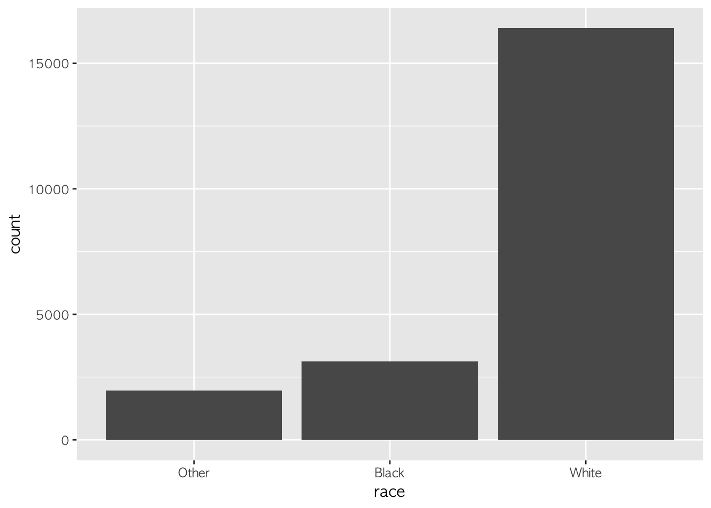
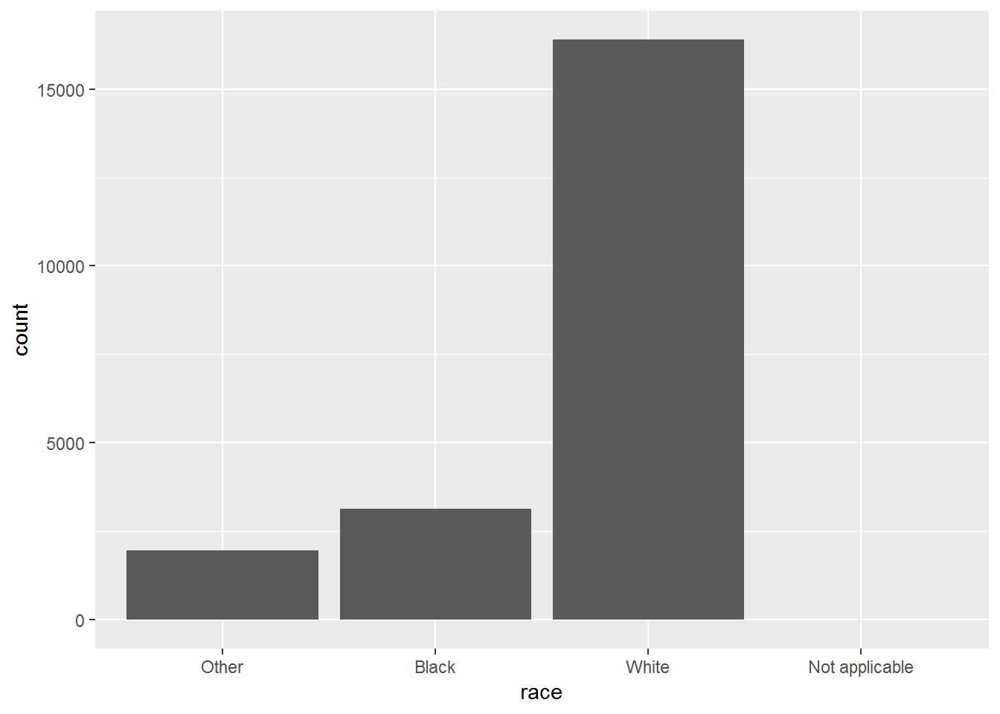
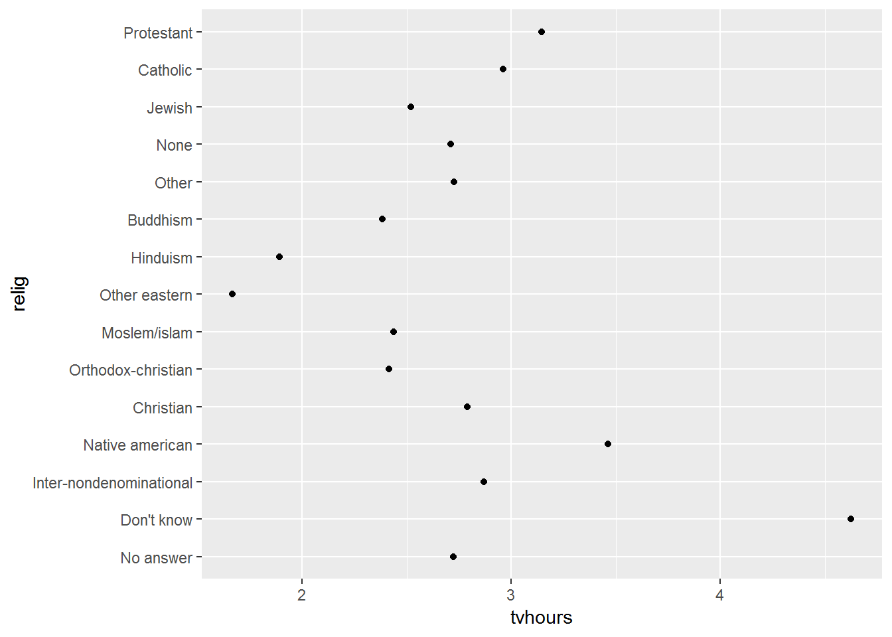
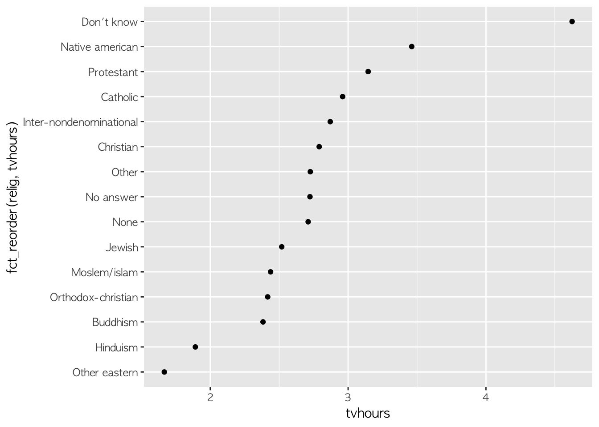
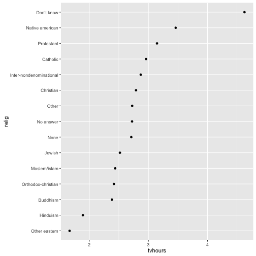
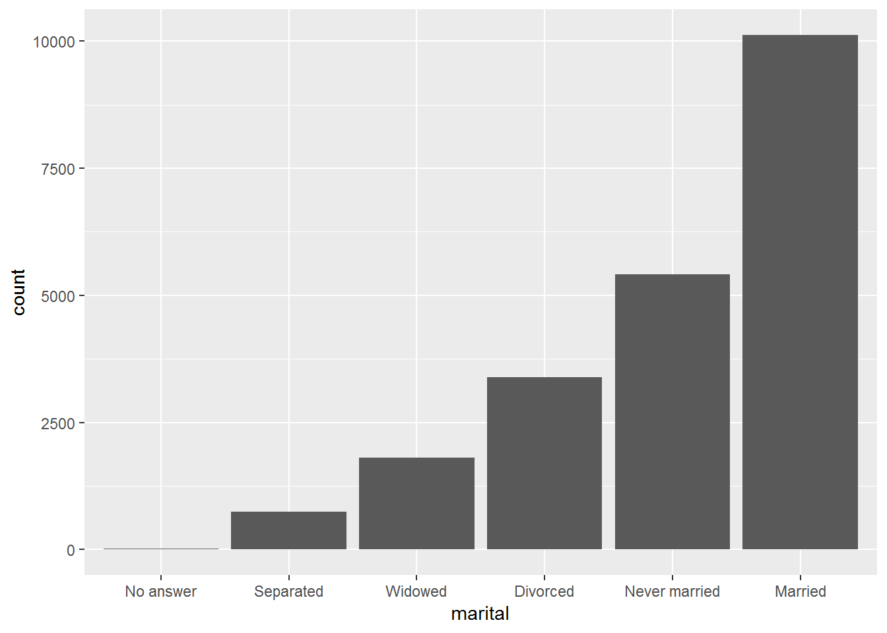

xwMOOC 기계학습
요인(Factor) - 범주형 자료형
학습 목표
- 범주형 데이터를 처리하는 요인(factor) 자료형을 이해한다.
tidyverse생태계에서 범주형 요인을 담당하는forcats팩키지를 살펴본다.
1. forcats 팩키지 1
install.packages("tidyverse"), install.packages("forcats") 명령어를 통해서 library(tidyverse), library(forcats)를 통해서 명시적으로 팩키지를 불러와서 적재한다. 이유는 현시점 기준 아직 tidyverse의 핵심 일원은 아니다.
1. 요인(factor) 기초 2
요인형 자료형을 문자형 대신 사용하게 되면 두가지 장점이 있는데, 가장 큰 장점은 아마도 오탈자로 생기는 새로운 유형 생성을 억제시킬 수 있다. 즉, 월은 12개월 밖에 존재하지 않는다. 따라서, 오탈자로 인해 범주가 추가로 생성되는 것을 사전에 방지할 수 있다. 그리고, 요인형을 자료형을 갖추게 되면 정렬을 쉽게 할 수도 있다.
일반 문자형 벡터을 정렬하게 되면 알파벳순으로 정렬하는데 무의미하다.
x1 <- c("Dec", "Apr", "Jan", "Mar")
sort(x1)[1] "Apr" "Dec" "Jan" "Mar"
levels 인자로 수준을 정의하게 되면 오탈자로 인한 엉뚱한 범주가 추가되는 것을 방지하는 것과 더불어 정렬하게 되면 사람에게 좀더 의미있게 다가온다.
month_levels <- c(
"Jan", "Feb", "Mar", "Apr", "May", "Jun",
"Jul", "Aug", "Sep", "Oct", "Nov", "Dec")
y1 <- factor(x1, levels = month_levels)
y1[1] Dec Apr Jan Mar
Levels: Jan Feb Mar Apr May Jun Jul Aug Sep Oct Nov Dec
sort(y1)[1] Jan Mar Apr Dec
Levels: Jan Feb Mar Apr May Jun Jul Aug Sep Oct Nov Dec
x2 문자열 벡터에 Jam 범주가 들어가 있는데 이를 levels를 통해 범주를 설정하게 되면 오류를 방지할 수 있다. 특히, parse_factor 명령어를 사용하면 어디가 잘못되었는지 확인이 쉽다.
x2 <- c("Dec", "Apr", "Jam", "Mar")
y2 <- factor(x2, levels = month_levels)
y2[1] Dec Apr <NA> Mar
Levels: Jan Feb Mar Apr May Jun Jul Aug Sep Oct Nov Dec
y2 <- parse_factor(x2, levels = month_levels)levels를 생략하게 되면 기본디폴트 설정으로 알파벳순으로 범주를 생성하여 수준을 정해버린다.
factor(x1)[1] Dec Apr Jan Mar
Levels: Apr Dec Jan Mar
수준(levels) 순서를 맞추려면 unique() 혹은 fct_inorder() 함수를 사용한다.
f1 <- factor(x1, levels = unique(x1))
f1[1] Dec Apr Jan Mar
Levels: Dec Apr Jan Mar
f2 <- x1 %>% factor() %>% fct_inorder()
f2[1] Dec Apr Jan Mar
Levels: Dec Apr Jan Mar
levels(f2)[1] "Dec" "Apr" "Jan" "Mar"
1. GSS(General Social Survey) 사례
미국 시카고 대학 독립적인 연구기관 NORC에서 장기적으로 수행하는 설문조사 GSS(General Social Survey) 데이터를 실습자료로 활용한다.
gss_cat# A tibble: 21,483 × 9
year marital age race rincome partyid
<int> <fctr> <int> <fctr> <fctr> <fctr>
1 2000 Never married 26 White $8000 to 9999 Ind,near rep
2 2000 Divorced 48 White $8000 to 9999 Not str republican
3 2000 Widowed 67 White Not applicable Independent
4 2000 Never married 39 White Not applicable Ind,near rep
5 2000 Divorced 25 White Not applicable Not str democrat
6 2000 Married 25 White $20000 - 24999 Strong democrat
7 2000 Never married 36 White $25000 or more Not str republican
8 2000 Divorced 44 White $7000 to 7999 Ind,near dem
9 2000 Married 44 White $25000 or more Not str democrat
10 2000 Married 47 White $25000 or more Strong republican
# ... with 21,473 more rows, and 3 more variables: relig <fctr>,
# denom <fctr>, tvhours <int>
forcats 팩키지에 포함되어 있는 데이터로 원하는 경우 ? gss-cat 명령어를 통해 데이터에 대한 자세한 내용을 확인할 수 있다.
gss_cat %>%
count(race)# A tibble: 3 × 2
race n
<fctr> <int>
1 Other 1959
2 Black 3129
3 White 16395
ggplot(gss_cat, aes(race)) +
geom_bar()
ggplot2에서 기본디폴트 설정으로 어떤 값도 없는 수준은 자동으로 drop 시킨다. 만약 변수에 포함된 모든 수준을 보려면 drop=FALSE를 넣어 명시적으로 작성한다.
ggplot(gss_cat, aes(race)) +
geom_bar() +
scale_x_discrete(drop = FALSE)
1. 요인과 관련된 가장 많이 사용되는 기능 두가지
요인과 관련되어 가장 많이 사용하는 기능은 다음과 같다.
- 수준 순서를 바꿔 조정함
- 수준내부 값을 뭉개거나 변경시키는 변화
1. 수준 순서를 변경
relig <- gss_cat %>%
group_by(relig) %>%
summarise(
age = mean(age, na.rm = TRUE),
tvhours = mean(tvhours, na.rm = TRUE),
n = n()
)
ggplot(relig, aes(tvhours, relig)) + geom_point()
수준을 조정하지 않는 경우 전반적인 패턴을 살펴보기 어렵다. 하지만, 수준 순서를 재조장하게 되면 가독성을 훨씬 높일 수 있다. fct_reorder() 함수를 사용하는데 인자가 세개 필요하다.
f, 수준을 변경하려는 요인명x, 수준을 변경하는데 사용되는 숫자 벡터에fun,f값 각각에 대해 다수 값이 있는 경우 이를 요약할 함수, 기본디폴트 함수는 중위수를 산출하는 함수median.
ggplot(relig, aes(tvhours, fct_reorder(relig, tvhours))) +
geom_point()
aes() 함수에서 mutate()로 요인 수준을 뽑아내서 수준을 재조정한다.
relig %>%
mutate(relig = fct_reorder(relig, tvhours)) %>%
ggplot(aes(tvhours, relig)) +
geom_point()
막대그래프의 경우 fct_infreq() 함수를 사용해서 오름 빈도수로 정렬이 가능하다: fct_rev()와 조합해서 사용해도 좋다.
gss_cat %>%
mutate(marital = marital %>% fct_infreq() %>% fct_rev()) %>%
ggplot(aes(marital)) +
geom_bar()
1. 요인변수 내부 수준을 변경
요인변수 내부 수준을 바꾸거나 뭉개서 합치는 기능이 자주 사용되고 있다.
gss_cat %>% count(partyid)# A tibble: 10 × 2
partyid n
<fctr> <int>
1 No answer 154
2 Don't know 1
3 Other party 393
4 Strong republican 2314
5 Not str republican 3032
6 Ind,near rep 1791
7 Independent 4119
8 Ind,near dem 2499
9 Not str democrat 3690
10 Strong democrat 3490
gss_cat %>%
mutate(partyid = fct_recode(partyid,
"Republican, strong" = "Strong republican",
"Republican, weak" = "Not str republican",
"Independent, near rep" = "Ind,near rep",
"Independent, near dem" = "Ind,near dem",
"Democrat, weak" = "Not str democrat",
"Democrat, strong" = "Strong democrat"
)) %>%
count(partyid)# A tibble: 10 × 2
partyid n
<fctr> <int>
1 No answer 154
2 Don't know 1
3 Other party 393
4 Republican, strong 2314
5 Republican, weak 3032
6 Independent, near rep 1791
7 Independent 4119
8 Independent, near dem 2499
9 Democrat, weak 3690
10 Democrat, strong 3490
fct_recode() 함수는 명시적으로 언급되지 않는 수준을 그대로 두고, 존재하지 않는 수준을 우연히 언급할 경우 경고 메시지를 띄운다.
gss_cat %>%
mutate(partyid = fct_recode(partyid,
"Republican, strong" = "Strong republican",
"Republican, weak" = "Not str republican",
"Independent, near rep" = "Ind,near rep",
"Independent, near dem" = "Ind,near dem",
"Democrat, weak" = "Not str democrat",
"Democrat, strong" = "Strong democrat",
"Other" = "No answer",
"Other" = "Don't know",
"Other" = "Other party"
)) %>%
count(partyid)# A tibble: 8 × 2
partyid n
<fctr> <int>
1 Other 548
2 Republican, strong 2314
3 Republican, weak 3032
4 Independent, near rep 1791
5 Independent 4119
6 Independent, near dem 2499
7 Democrat, weak 3690
8 Democrat, strong 3490
fct_collapse() 함수는 fct_recode()함수의 변종으로 유용하다.
gss_cat %>%
mutate(partyid = fct_collapse(partyid,
other = c("No answer", "Don't know", "Other party"),
rep = c("Strong republican", "Not str republican"),
ind = c("Ind,near rep", "Independent", "Ind,near dem"),
dem = c("Not str democrat", "Strong democrat")
)) %>%
count(partyid)# A tibble: 4 × 2
partyid n
<fctr> <int>
1 other 548
2 rep 5346
3 ind 8409
4 dem 7180
복잡한 데이터셋을 다룰 경우 처리할 변수가 상당히 많은 경우가 있다. 이런 경우 fct_lump() 함수가 유용하다. 범주내 수준에 작은 값이 할당된 경우 이를 합쳐 의미있는 수준에 대한 값이 되도록 만드는 기능을 수행한다. n=10으로 인자값을 넣어주면 해당 변수에 수준이 10개로 지정된다.
gss_cat %>%
mutate(relig = fct_lump(relig, n = 10)) %>%
count(relig, sort = TRUE) %>%
print(n = Inf)# A tibble: 10 × 2
relig n
<fctr> <int>
1 Protestant 10846
2 Catholic 5124
3 None 3523
4 Christian 689
5 Other 458
6 Jewish 388
7 Buddhism 147
8 Inter-nondenominational 109
9 Moslem/islam 104
10 Orthodox-christian 95